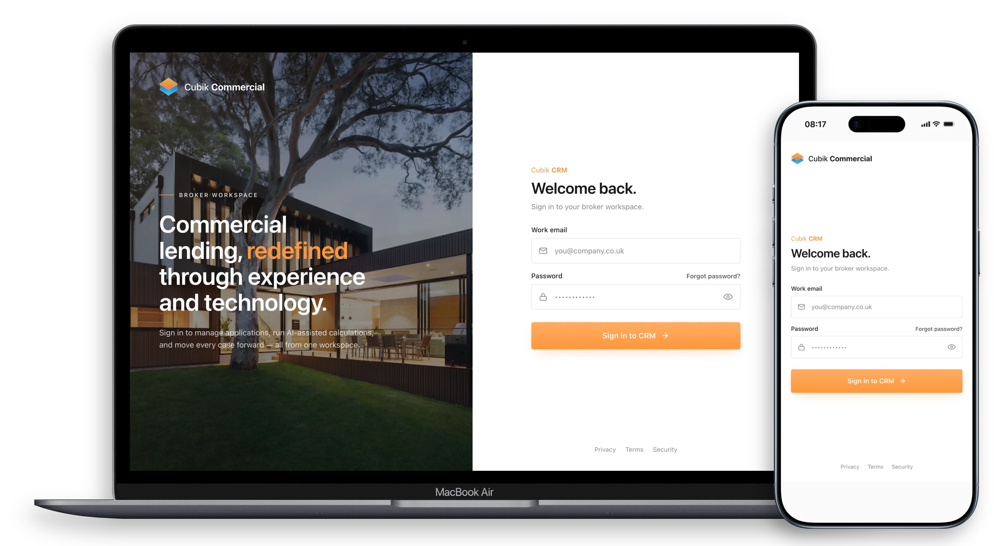

Cubik CRM — A solo-built broker admin suite that fuses AI quoting with pipeline tracking.
Cubik CRM turns broker enquiries into pipeline-tracked deals in a single workspace. Brokers generate indicative quotes for Bridging and Commercial Buy-to-Let in under 60 seconds using an embedded AI quote engine, then track cases from enquiry to completion without switching tools. Designed, prompted, prototyped and shipped as a four-week solo build using Claude Code as the full production pipeline.

Specialist lending brokers were managing cases across spreadsheets, calculators, and email — manually recalculating every quote when terms changed. Pipeline visibility was non-existent and data was lost at every handoff point between tools.
- Quotes recalculated manually on every change
- No pipeline visibility — cases stalled silently
- Data lost or duplicated at every tool handoff
- Three separate tools pretending to work together
- No audit trail — case history impossible to reconstruct
.webp)
Cubik shipped as a connected workspace in four weeks. Brokers generate indicative quotes in under 60 seconds, track cases from enquiry to completion, and review full audit trails — without switching tools or context.
- Indicative quote generated in under 60 seconds
- Full case lifecycle in one workspace
- Audit trail and affordability data alongside deal stages
- Brand to working product in four weeks solo
.webp)
Tool selection is part of the design decision. Claude Design extracted brand tokens; Claude Code built the React frontend directly from Figma — no screenshots, no manual handoff. AI was the production pipeline, not a helper.
- Figma
- Claude Design
- Claude Code
- React
- Node.js
- PostgreSQL
- Tailwind CSS
- Vercel
.webp)
.webp)
.webp)